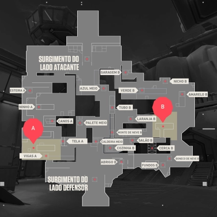

Seu próximo campo de batalha será uma área de escavação secreta da Kingdom retomada pela força do Ártico. Você precisará ter cuidado com os terrenos horizontais dos dois pontos principais, que são protegidos por neve e metal. Aproveite para usar as tirolesas, e seus inimigos nunca verão seu ataque iminente.